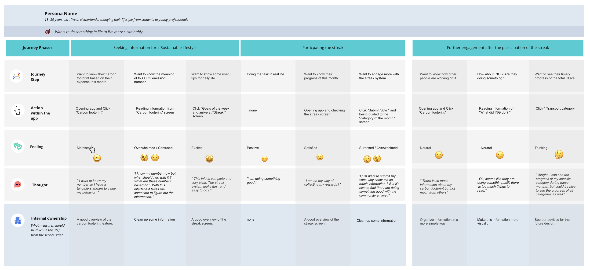
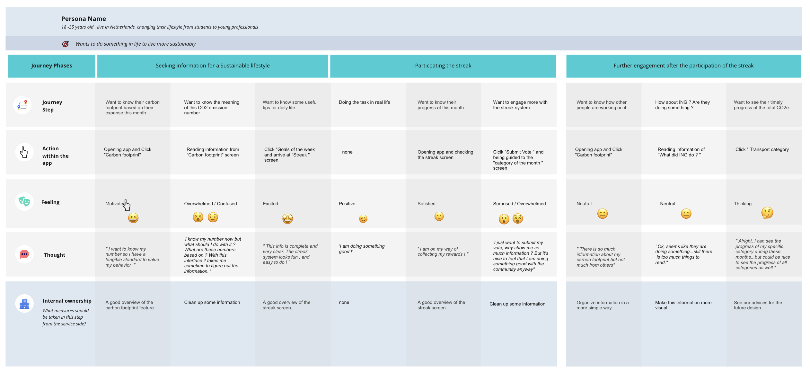

Home > Projecten > Misinformatie op TikTok
Carbon footprint feature - ING
De opdrachtgever van dit project is ING. ING is een grote bank wat de afgelopen tijd veel bezig is met duurzaamheid. Met ruim 37 miljoen klanten hebben de bedrijfsactiviteiten van ING een aanzienlijke invloed op de samenleving en het milieu.
Op dit moment is ING bezig met een feature voor de CO2-voetafdruk die gerelateerd is aan de Insight-functie van ING. Per uitgave zie je de CO2-uitstoot in KG.
Hoe kunnen we betekenisvol advies geven en u tot actie aanzetten op basis van de C02 data van uw uitgaven? < Dit is de design challenge wat ING heeft opgesteld.
Het doel die bij deze design challenge hoort is het ontdekken van artikelen, visualisaties en nudges die zullen resulteren in een gedragsverandering op basis van inzichten uit ons onderzoek.
Punten waar we aandacht aan moeten besteden tijdens het ontwerpen van deze nieuwe feature zijn:
Een paar van de deliverables waren:
 


Ons onderzoek bestond uit drie fases: 40% begrijpen, 40% verkennen en 20% maken.
Begrijpen:
Dus eerst willen we de opdracht, het probleem en de doelgroep begrijpen. De doelgroep was op dit moment iedereen. Daarom hebben we een enquête gemaakt die we naar bijna 60 mensen van verschillende leeftijden sturen. Deze enquête was nuttig, we hebben geweldige inzichten gekregen en we hebben nu een doelgroep.
Doelgroep
Mensen van 18 tot 35 jaar die hun levensstijl veranderen van studenten- naar werkend leven die al duurzaam gedrag vertonen maar dit gedrag willen verbeteren.
Twee inzichten
Eerste inzicht: veel mensen weten niet wat hun CO2-voetafdruk betekent. Dat kun je heel goed zien in deze statistieken die uit ons onderzoek naar voren kwamen:
Maar er kwam nog een ander inzicht uit het onderzoek naar voren. Dat wil zeggen dat mensen denken dat de grote bedrijven moeten veranderen om de CO2-uitstoot terug te dringen. En dat ze denken dat veranderen als individu de klimaatverandering niet positief zal helpen.
Visualiseren:
Datavisualisatie is het creëren van visuele representaties van gegevens. Deze weergaven communiceren op duidelijke wijze inzichten uit gegevens via diagrammen en grafieken. Op het gebied van business intelligence helpen deze visualisaties gebruikers betere op data gebaseerde beslissingen te nemen.
Uit ons bureauonderzoek is gebleken dat bellen een zeer goede manier zijn om de CO2-uitstoot in beeld te brengen.
Hoe mensen te motiveren en hun gedrag te veranderen?
Nadat we veel onderzoek hadden gedaan naar het motiveren van mensen om hun gedrag te veranderen en met een gedragsveranderingsexpert genaamd Cogo hadden gesproken, kwamen we met een lijst met punten die belangrijk zijn om mensen te motiveren en hun gedrag te veranderen.
Uit ons deskresearch is gebleken dat bellen een zeer goede manier zijn om de CO2-uitstoot in beeld te brengen.
Concept:
Na het analyseren van het onderzoek zijn we gaan brainstormen. Na brainstormen hebben we de ideeën in categorieën gedefinieerd. We hadden drie categorieën waar de meeste ideeën bij zaten. De categorieën waren: Samenwerken, Visualiseren/Vooruitgang en Belonen, Nudging, Motivatie. Al deze categorieën samen vormen één concept.
Maken:
Na het maken van een eerste prototype zijn we gaan testen met de doelgroep. Ze gaven goede feedback en over het algemeen begreep iedereen het concept goed en konden ze door het prototype klikken. Voor de tweede versie van het prototype hebben we kleine aanpassingen gedaan.
Onderzoekmethodes
Tools
Werkt mijn product?
Om te weten of mijn product werkt, ga ik de design challenge beantwoorden. De design challenge is de ontwerpvraag die aan we redelijk aan het begin van het project gemaakt hebben waar het doel van het eindproduct in verwerkt is.
Design challenge: Hoe kunnen we betekenisvol advies geven en u tot actie aanzetten op basis van de C02 data van uw uitgaven?
Is het advies betekenisvol?
Ik ben van mening dat het betekenisvol advies is omdat we de gebruiker een goed inzicht geven in wat hun C02 uitstoot is op basis van hun uitgaven. Dit hebben we op een zo duidelijk mogelijke manier gedaan. We hebben namelijk breed onderzoek gedaan en door user testing is geconcludeerd dat onze manier van de CO2 uitstoot in kaart brengen een beter beeld geeft dan dat de gebruikers voorheen hadden.
Ook hebben we haalbare tips of taken gegeven om de C02 van de gebruiker te verlagen.
Als laatst zijn we de gebruiker tegemoet gekomen in hun mening door ING ook duurzamer te laten worden door opdrachten te doen.